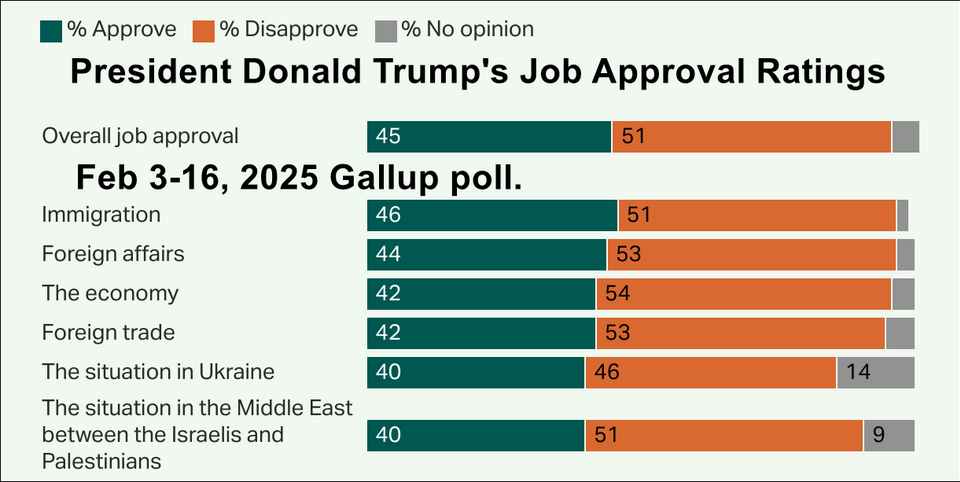
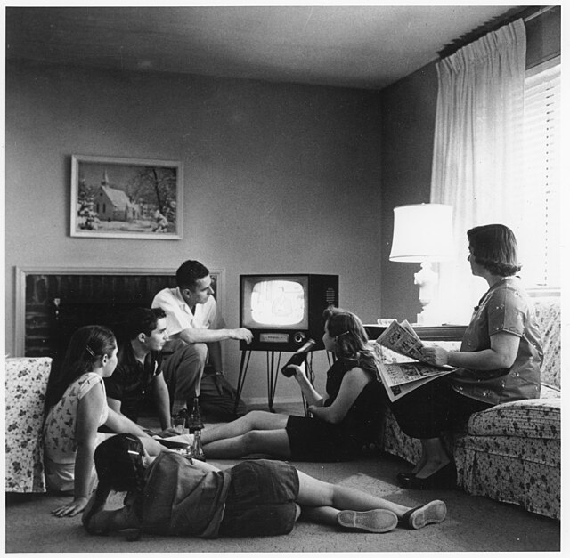
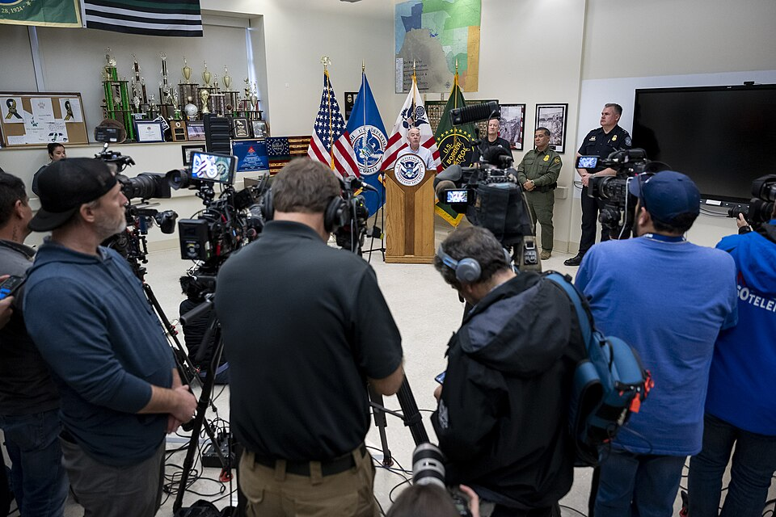
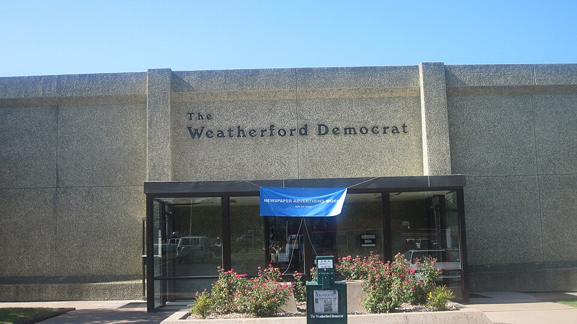
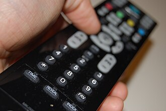

Discover how public opinion is formed, measured, and shaped by media in Texas!
Enter your name to begin your journey through public opinion and media:
Learn about beliefs, attitudes, ideology, and political socialization.
Explore how polls affect campaigns, elections, and government.
Understand polling methods, sampling, and survey design.
Discover push polls, the Bradley effect, and polling challenges.
Explore media types, conglomerates, and the fourth estate.
Learn about framing, priming, and coverage effects on society.
The collection of public opinion through polling and interviews is a part of political culture. Politicians want to know what the public thinks. Campaign managers want to know how citizens will vote. Media members seek to write stories about what the public wants. Every day, polls take the pulse of the people and report the results.

+15 points! 🧠 The building blocks of opinion!
Most citizens base their political opinions on their beliefs and attitudes, both of which begin to form in childhood through political socialization.

+15 points! 🗳️ From childhood to voting booth!
By the time we complete school, we have usually acquired the information necessary to form political views and be contributing members of the political system. A young man may realize he prefers the Democratic Party because it supports his views on social programs and education, whereas a young woman may decide she wants to vote Republican because its platform echoes her beliefs about economic growth and family values.
The beliefs we acquire early in life are unlikely to change dramatically as we grow older. Our underlying beliefs and attitudes are unlikely to change very much, unless we experience events that profoundly affect us. For example, family members of 9/11 victims became more Republican and more political following the terrorist attacks. Similarly, young adults who attended political protest rallies in the 1960s and 1970s were more likely to participate in politics than their peers who had not protested.
Today, polling agencies have noticed that citizens' beliefs have become far more polarized, or widely opposed, over the last decade. According to some scholars, these shifts led partisanship to become more polarized than in previous decades, as more citizens began thinking of themselves as conservative or liberal rather than moderate.
Elections are the events on which opinion polls have the greatest measured effect. Public opinion polls do more than show how we feel on issues or project who might win an election. The media use public opinion polls to decide which candidates are ahead of the others and therefore of interest to voters and worthy of interview.

+15 points! 🎪 Media momentum!
The bandwagon effect occurs when the media pays more attention to candidates who poll well during the fall and the first few primaries.
Example: Bill Clinton was nicknamed the "Comeback Kid" in 1992, after he placed second in the New Hampshire primary despite accusations of adultery with Gennifer Flowers. The media's attention on Clinton gave him the momentum to make it through the rest of the primary season, ultimately winning the Democratic nomination and the presidency.
Public opinion polls also affect how much money candidates receive in campaign donations. Donors assume polls are accurate enough to determine who the top candidates will be, and they give money to those who do well. Candidates who poll at the bottom will have a hard time collecting donations.
+15 points! 🏛️ Polls and policymaking!
The relationship between public opinion polls and government action is murkier than that between polls and elections. Do politicians use public opinion polls to guide their decisions? The short answer is "sometimes."
The public is not perfectly informed about politics, so politicians realize public opinion may not always be the right choice. Yet studies have found that voters behave rationally despite having limited information. They appear to be informed just enough, using preferences like their political ideology and party membership, to make decisions and hold politicians accountable during an election year.
According to James Stimson's prominent study, the public's mood, or collective opinion, can become more or less liberal from decade to decade. If public mood changes, politicians may change positions to match. The more savvy politicians look carefully to recognize when shifts occur.
Exit polls, taken the day of the election, are the last election polls conducted by the media. Announced results of these surveys can deter voters from going to the polls if they believe the election has already been decided.
Public opinion polls tell us what proportion of a population has a specific viewpoint. They do not explain why respondents believe as they do or how to change their minds. Political polling is a science. From design to implementation, polls are complex and require careful planning and care.

In 1936, Literary Digest sent opinion cards to people who had a subscription, a phone, or a car registration. Only some recipients sent back their cards. The result? Alf Landon was predicted to win 55.4% of the popular vote; in the end, he received only 38%. Franklin D. Roosevelt won another term. In 1948, Thomas Dewey lost the presidential election to Harry Truman, despite polls showing Dewey far ahead—pollsters did not poll up to Election Day, missing a late shift in voter opinion.
+15 points! 👥 Mirroring the population!
A representative sample consists of a group whose demographic distribution is similar to that of the overall population. For example, nearly 51% of the U.S. population is female. To match this demographic distribution, any poll intended to measure what most Americans think should survey a sample containing slightly more women than men.
Sample sizes vary by organization:
A larger sample makes a poll more accurate, but once the poll has enough respondents to be representative, increases in accuracy become minor and are not cost-effective.
+15 points! 📱 Modern polling methods!
Most polling now occurs over the phone or Internet. Methods include:
Challenge: The millennial generation (aged 18–33) is more likely to text than answer unknown calls, making them harder to interview. Polling companies now reach out via email and social media.
For a number of reasons, polls may not produce accurate results. Two important factors a polling company faces are timing and human nature. Unless you conduct an exit poll on Election Day, there is always the possibility poll results will be wrong—a citizen might change his or her mind, lie, or choose not to vote at all.
+15 points! 📞 Deceptive polling!
Push polls consist of political campaign information presented as polls. A respondent is called and asked questions about their candidate selections. If the respondent's answers are for the "wrong" candidate, the next questions provide negative information about that candidate to change the voter's mind.
Texas Example: In 2014, a fracking ban was placed on the ballot in Denton, Texas. During the campaign, voters received calls that polled them on the proposed ban. If the respondent planned to vote for the ban, questions shifted to provide negative information. One question asked, "If you knew... two Texas railroad commissioners have raised concerns about Russia's involvement in the anti-fracking efforts in the U.S.?" The question played upon voter fears to convince them to vote against the ban.
+15 points! 🌿 A modern Bradley effect!
In 2010, Proposition 19, which would have legalized and taxed marijuana in California, met with a new version of the Bradley effect. Nate Silver, a political blogger, noticed that polls were inconsistent—sometimes showing the proposition would pass, other times showing it would fail.
Silver compared the polls and how they were administered. He proposed that voters speaking with a live interviewer gave the socially acceptable answer that they would vote against Proposition 19, while voters interviewed by a computer felt free to be honest. The measure was ultimately defeated on Election Day.
Interviewer demographics may also affect answers—African Americans, for example, may give different responses to interviewers who are white than to interviewers who are black.
Beginning in 2008, the Texas Politics Project at the University of Texas, under the direction of James Henson and Joshua Blank, has conducted three to four statewide public opinion polls each year to assess opinions of registered voters on elections, public policy, and attitudes towards politics. In 2009, UT partnered with the Texas Tribune to make data freely available to students, researchers, and the general public.
Ours is an exploding media system. What started as print journalism was supplemented by radio, then network television, then cable television. Now, with the Internet, blogs, and social media—a set of applications that allow users to immediately communicate with one another—citizens have a wide variety of sources for instant news.
+15 points! 📡 Broadcasting explained!
National networks like CBS or NBC purchase rights to programs and distribute them to local stations. Most local stations are affiliated with a national network corporation and broadcast national network programming. Affiliates give priority to network news and other programming, diverging only for local or national emergencies.
Network vs. Local News:
Cable networks (CNN, MSNBC, FOX News) operate directly without local affiliates, specializing in different types of programming. C-SPAN now has three channels covering Congress, the president, and the courts.
+15 points! 🏛️ Media as watchdog!
The media are watchdogs of society and public officials. Some refer to the media as the fourth estate, with the branches of government being the first three estates and the media equally participating as the fourth. This role helps maintain democracy and keeps the government accountable for its actions.
The media also engages in agenda setting—choosing which issues or topics deserve public discussion. For example, in the early 1980s, famine in Ethiopia drew worldwide attention only after western media covered it. In 1991, a private citizen's camcorder footage of four police officers beating Rodney King in Los Angeles, after appearing on local TV and then national news, began a national discussion on police brutality and ignited riots.
Today, social media and smartphones have begun to appropriate the agenda-setting power of traditional media, allowing witnesses to instantly upload images and accounts of events.
Millennials (aged 18–33) are more likely to get news from social media (YouTube, Twitter, Facebook), while baby boomers (aged 50–68) are most likely to get news from television, either national broadcasts or local news.
Concerns about the effects of media on consumers and the existence of media bias go back to the 1920s. Reporter Walter Lippmann noted that citizens have limited personal experience with government and posited that the media, through their stories, place ideas in citizens' minds.

+15 points! 🖼️ Shaping perception!
Framing is the creation of a narrative, or context, for a news story that affects how the reader processes it:
Priming: When media coverage predisposes the viewer to a particular perspective. If a newspaper focuses on unemployment, struggling industries, and jobs moving overseas, the reader will have a negative opinion about the economy and may be primed to disapprove of the president's job performance.
Covert content is political information presented as unbiased. Overt content openly states its ideological viewpoint (like Rush Limbaugh or Mother Jones).
+15 points! 👥 Coverage disparities!
Race: Studies found local news shows overrepresented blacks as perpetrators and whites as victims of crime. Network news misrepresents victims of poverty by showing more images of blacks than whites. Viewers are left believing African Americans are the majority of the unemployed and poor.
Gender: Most journalists in the early 1900s were male, and women's issues weren't part of the newsroom discussion. In 1976, Barbara Walters became the first female co-anchor on a network news show but was met with hostility from her co-anchor. Studies found female candidates receive more coverage than before, but it's often negative. The historically negative coverage of female candidates has had a concrete effect: Women are less likely than men to run for office, partly due to concerns about exposing their families to criticism.
In 2008, Sarah Palin's nomination as McCain's running mate illustrated this concern—coverage questioned whether she should run given her young children, including one with developmental disabilities.
In 1968, the average sound bite from Richard Nixon was 42.3 seconds. A recent study found sound bites had decreased to only eight seconds in the 2004 election. The clips chosen to air were attacks on opponents 40% of the time. Only 30% contained information about the candidate's issues. Campaign coverage now focuses on the spectacle rather than providing information—sometimes dubbed "pack journalism" because journalists follow one another rather than digging for their own stories.
Use your browser's "Save as PDF" option. Submit this PDF — screenshots will not be accepted.
Chapter 15: Public Opinion and the Media in Texas
| Section | Topic | Status | Points | Time |
|---|---|---|---|---|
| 1 | What Is Public Opinion? | ❌ | 0/160 | --:-- |
| 2 | Public Opinion & Elections | ❌ | 0/165 | --:-- |
| 3 | Measuring Public Opinion | ❌ | 0/165 | --:-- |
| 4 | Problems in Polling | ❌ | 0/165 | --:-- |
| 5 | The Media Landscape | ❌ | 0/165 | --:-- |
| 6 | Media Effects & Bias | ❌ | 0/165 | --:-- |
This report documents the student's completion of Chapter 15: Public Opinion and the Media. Time spent per section is tracked automatically—sections completed faster than expected will trigger a pacing alert.